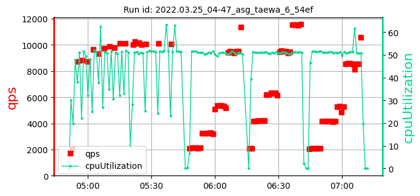

asg_taewa_6_samples: 2date: 2022-06-13 11:36:03.536488 | max: 1416 min: 1122 mean: 1289 |
max: 10103 min: 9450 mean: 9774 |
max: 55.60 min: 51.64 mean: 53.62 |
max: 2021 min: 1729 mean: 1875 | ||
| 1: 2022.03.25_04-47_asg_taewa_6_54ef | cpu=35 pods=0 treads=25 sc_min=25 warmup=90 | Dura-tion s | qps | CPU % | Err | |
|  | [1323, 1122, 1342] 1263 | [10082, 10103, 10058] 10081 | [51.64, 55.45, 55.42] 54.17 | 2021 | ||
| 2: 2022.05.19_03-29_asg_taewa_6_d390 | cpu=35 pods=0 treads=25 sc_min=25 warmup=90 | Dura-tion s | qps | CPU % | Err | |
| [1377, 1416, 1154] 1315 | [9470, 9450, 9484] 9468 | [51.87, 55.6, 51.72] 53.06 | 1729 | |||
asg_taewa_6_samples: 2date: 2022-06-13 11:36:03.536488 | max: 1416 min: 1122 mean: 1289 |
max: 10103 min: 9450 mean: 9774 |
max: 55.60 min: 51.64 mean: 53.62 |
max: 2021 min: 1729 mean: 1875 |